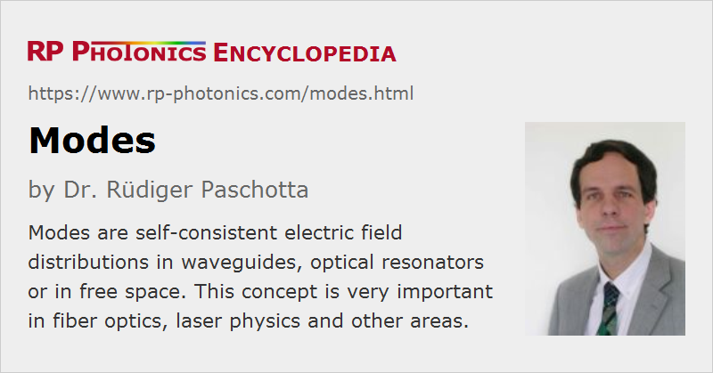

Modes
Definition: self-consistent electric field distributions in waveguides, optical resonators or in free space
More specific terms: guided modes, cladding modes, tunelling modes = leaky modes, resonator modes, Hermite–Gaussian modes, LP modes, higher-order modes
German: Moden
Categories: general optics, fiber optics and waveguides, optical resonators
How to cite the article; suggest additional literature
Author: Dr. Rüdiger Paschotta
This articles discusses propagation modes of light in free space, in a transparent homogeneous medium, in a waveguide structure, or in an optical resonator. Alternatively, the term “mode” can also mean a mode operation], e.g. continuous-wave mode locking, Q switching, or single-frequency operation; for such information, see the article on modes of laser operation.
When some light beam propagates in free space or in a transparent medium, its transverse intensity profile generally changes during propagation (see Figure 1). There are, however, certain electric field distributions which are self-consistent during propagation; these are called modes. What “self-consistent” means in the mentioned definition, depends on the situation. Different situations are discussed in the following sections.
Free-space Modes
The mathematically simplest kinds of modes in free space (or in an optically homogeneous medium) are plane waves. A plane wave satisfies the wave equation, provided only that the wavelength times the optical frequency matches the phase velocity of light in the medium. During propagation in a direction, a plane wave only changes its oscillation phase, and possibly its amplitude if there is optical loss or gain in a medium.
Although plane waves are mathematically very simple, they cannot resemble any wave occurring in reality, since they have an infinite transverse extent. Therefore, other kinds of modes, which are limited in the transverse spatial dimension, are often of higher interest. The simplest kind of such modes are Gaussian modes. A Gaussian beam expands or contracts during propagation, but is self-consistent in the sense that the amplitude profile is only scaled in the transverse dimension, but has a constant (in that case Gaussian) shape.
Each Gaussian mode is only the simplest member of a whole family of modes, which contains an infinite number of modes. The most frequently used mode families (mode systems) are those of Hermite–Gaussian modes and Laguerre–Gaussian modes. Within such a mode family, the Gaussian mode is the fundamental mode, while all other modes are called higher-order modes and have more complicated intensity profiles (see Figure 2). During propagation, the transverse extent of each higher-order mode changes in proportion to that of the fundamental mode.

Note that for each combination of an optical frequency, a beam axis, a focus position, and some beam radius of the Gaussian mode in the focus, a whole family e.g. of Hermite–Gaussian modes arises.
Waveguide Modes
Waveguide structures are spatially inhomogeneous structures which can guide waves. For light propagating in a waveguide, the self-consistency condition for a mode is more strict than for free-space modes: the shape of the complex amplitude profile in the transverse dimensions must remain exactly constant. Any re-scaling is not allowed, only an overall phase change and a loss or gain of total optical power, which are both described by the propagation constant.
A waveguide has only a finite number of guided propagation modes, the intensity distributions of which have a finite extent around the waveguide core. The number of guided modes, their transverse amplitude profiles and their propagation constants depend on the details of the waveguide structure and on the optical frequency. A single-mode waveguide (e.g. a single-mode fiber) has only a single guided mode per polarization direction. As an example of a multimode waveguide, Figure 3 shows the transverse profiles of all the LP modes of a multimode fiber.

A waveguide also has cladding modes, the intensity distributions of which essentially fill the whole cladding (and core) region. Optical fibers (even single-mode fibers) have a large number of cladding modes, which often exhibit substantial propagation losses at the outer interface of the cladding.
Optical fibers (except for photonic crystal fibers) usually have a radially symmetric refractive index profile and also a relatively small refractive index contrast between core and cladding. In that case, one can quite accurately describes the mode as LP modes, which are mathematically simpler to describe and are therefore usually used in practice.
For radially symmetric refractive index profiles, there is also the interesting phenomenon of orbital angular momentum modes [5, 6]. Those carry an angular momentum which is not related to the photon spin, also not to a rotating polarization direction. The wavefronts exhibit a helical structure. This is possible only for modes having zero intensity at the beam center – for example, LP modes with non-zero l.
Modes of fiber and other waveguides can be numerically calculated numerically with so-called mode solvers, which can be part of a fiber simulation software. Depending on whether the waveguides have radially symmetric profiles and are weakly guiding, mode solver algorithms with a different level of complexity and quite different computation times are required. A mode solver for optical fibers, when restricted to pure LP modes, can be numerically much simpler and faster than a general 2D mode solver.
Resonator Modes
For light in optical resonators (made of bulk-optical elements, not with waveguides), the self-consistency condition for a mode is again different: a mode must reproduce its exact transverse amplitude profile (without any re-scaling) only after a full resonator round trip; during the round trip, the mode profile may change in size and even in shape. On the other hand, the optical phase must also be reproduced after one round trip, i.e., the total experienced phase change must be an integer multiple of 2π. The overall optical power may decrease or increase if there are optical losses or gain in the resonator.
Due to the phase condition, resonator modes can exist only for certain optical frequencies (the resonance frequencies). In general, the round-trip phase shift depends on the intensity pattern of a mode. Therefore, different higher-order modes can have different sets of mode frequencies. In the simpler case of a geometrically stable resonator, there are fundamental (axial) modes with Gaussian shape and higher-order transverse modes e.g. of Hermite–Gaussian shape. Unstable resonators also have modes, but with much more complicated mode properties.
The article on resonator modes gives more details.
Application of the Mode Concept
In many photonic devices, light propagates only in a single mode. For example, single-mode operation of a laser means that only a single mode of its laser resonator is excited (i.e., carries a significant optical power). If the lasing mode is a Gaussian mode, the output is close to diffraction-limited, i.e. it has an ideal beam quality. As another example, a single-mode fiber guarantees a fixed intensity profile at its output, assuming that all light launched into cladding modes (unguided modes) is lost before the fiber end is reached. The mode of a single-mode fiber normally has a shape which is similar to that of a Gaussian.
In other cases, it is often convenient to decompose all the propagating light into different modes. That decomposition means that for each mode some mode amplitude (a complex number) is calculated for the given light field, usually using some overlap integral. The basic advantage of such a procedure is that it is known how all the modes propagate: for each mode, there is only a phase change which can be calculated from the propagation constant, and possibly some change in optical power. The total intensity and phase profile can then be calculated for any position simply by adding up the contributions of different modes. This procedure can greatly simplify numerical simulations: a large number of amplitudes, resembling e.g. a two-dimensional optical field distribution with many samples on a fine grid, can be replaced with a relatively small number of mode amplitudes (excitation coefficients), and thus often strongly reduce the demands both in terms of required computer memory and computation time.
The mode concept is useful even if the propagation conditions somewhat deviate from those for which the modes have been calculated. In such cases, mode coupling can occur: light from some mode can be coupled to one or several other modes. This is usually described with coupled differential equations for the mode amplitudes. Such mode coupling can be caused, e.g., by nonlinear interactions at high optical intensities or by external disturbances which act on a waveguide.
Questions and Comments from Users
Here you can submit questions and comments. As far as they get accepted by the author, they will appear above this paragraph together with the author’s answer. The author will decide on acceptance based on certain criteria. Essentially, the issue must be of sufficiently broad interest.
Please do not enter personal data here; we would otherwise delete it soon. (See also our privacy declaration.) If you wish to receive personal feedback or consultancy from the author, please contact him e.g. via e-mail.
By submitting the information, you give your consent to the potential publication of your inputs on our website according to our rules. (If you later retract your consent, we will delete those inputs.) As your inputs are first reviewed by the author, they may be published with some delay.
Bibliography
| [1] | E. Snitzer, “Cylindrical dielectric waveguide modes”, J. Opt. Soc. Am. 51 (5), 491 (1961), doi:10.1364/JOSA.51.000491 |
| [2] | D. Gloge, “Weakly Guiding Fibers”, Appl. Opt. 10 (10), 2252 (1971), doi:10.1364/AO.10.002252 |
| [3] | A. Yariv, “Coupled-mode theory for guided-wave optics”, IEEE J. Quantum Electron. 9 (9), 919 (1973), doi:10.1109/JQE.1973.1077767 |
| [4] | L. W. Casperson, “Mode stability of lasers and periodic optical systems”, IEEE J. Quantum Electron. 10 (9), 629 (1974), doi:10.1109/JQE.1974.1068485 |
| [5] | L. Allen et al., “Orbital angular momentum of light and the transformation of Laguerre–Gaussian laser modes”, Phys. Rev. A 45 (11), 8185 (1992), doi:10.1103/PhysRevA.45.8185 |
| [6] | M. J. Padgett, “Orbital angular momentum 25 years on”, Opt. Express 25 (10), 11265 (2017), doi:10.1364/OE.25.011265 |
| [7] | R. Paschotta, tutorial on "Passive Fiber Optics", Part 2: Fiber Modes |
| [8] | R. Paschotta, case study on fiber modes |
See also: mode radius, effective mode area, effective refractive index, mode matching, optical resonators, resonator modes, fibers, fiber simulation software, LP modes, higher-order modes, waveguides, mode coupling, The Photonics Spotlight 2006-12-03, The Photonics Spotlight 2007-10-11, The Photonics Spotlight 2008-04-15
and other articles in the categories general optics, fiber optics and waveguides, optical resonators
|  |
If you like this page, please share the link with your friends and colleagues, e.g. via social media: 


These sharing buttons are implemented in a privacy-friendly way! |
2020-05-12
What is the relation between Laguerre–Gaussian and LP modes, having similar intensity patterns?
Answer from the author:
LP modes are modes of optical fibers with a radially symmetric refractive index profile (and a week index contrast). Laguerre–Gaussian modes are modes which are calculated for propagation in a homogeneous medium (for example free space). Because the latter are based on calculations with polar coordinates, they look somewhat similar to LP modes.